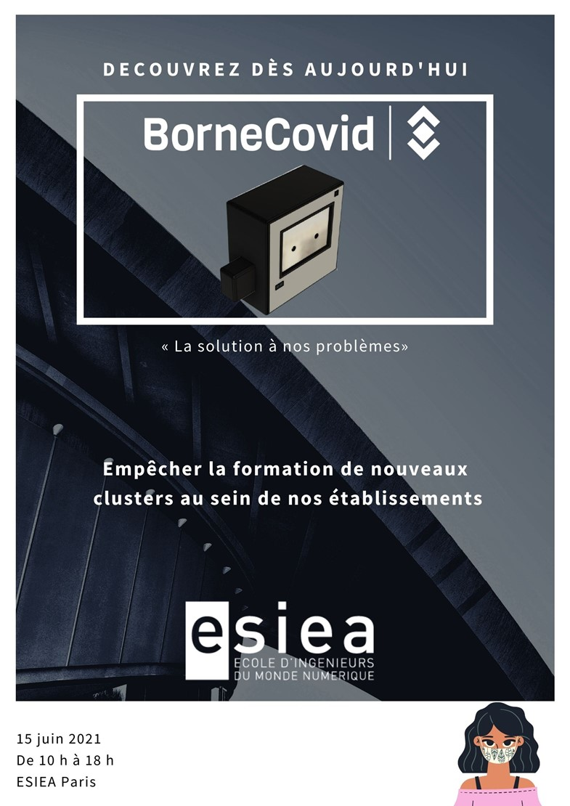

Les étudiants en 3ème année de l'ESIEA ont le plaisir de vous présenter leurs projets. Ces étudiants sont en le cycle ingénieur
et effectueront pour leur première expérience profesionnelle l'année prochaine afin de mener vers la réussite un projet Entreprise.

Equipe 24C
Drone Tracke
Vos aventures sous un autre angle?!
Le projet Drone Tracker compte apporter une solution efficace à tous les sportifs, journalistes et cameraman, professionnels ou amateurs. Notre objectif est de concevoir un drone capable de vous reconnaître et vous suivre dans toutes vos aventures. Avec de la reconnaissance faciale et du traitement d’image, notre drone sera un concentré des technologies du numérique les plus modernes.
BRUGEVIN Méghane,
CHATEL Théo,
DUTERTRE Nicolas,
MARTIN Benjamin,
MOHAMED Abd Elrahman
TUTEUR / TUTRICE : Alexandre BRIERE

Equipe 23B
Sumbot
Repousser les limites de la robotique
Notre PST a pour but de créer un robot qui participera à une compétition de sumo version robotisé. Le tournoi se déroule comme un match de Sumo traditionnel avec pour objectif?:
«?pousser son adversaire hors du ring?»
La conception de ce robot vous permettra de mettre en œuvre vos compétences acquise tout au long de votre cursus scolaire et bien plus encore?!
AKOKA Théo,
CARDOSO Eduardo,
CHEN David,
YAGAPIN Steeve Franklin,
LOLIVIER Paul
TUTEUR / TUTRICE : Nadjim BENALI

Equipe 23I
AVENTURE RPG
Joueur récurrent ou novice en jeux vidéo ? Venez donc découvrir notre dernière création: l'aventure RPG. Pas besoin d'être un pro, venez vivre une réelle odyssée dans notre super jeu.
Notre PST est un jeu d'aventure, assez atypique n'est-ce pas ? Alors pourquoi ne pas venir le découvrir avec vos amis ou tout seul chez vous. Mais c'est aussi un RPG c'est-à-dire un jeu vidéo où vous allez jouer un personnage et le façonner à votre manière, en l'améliorant, en l'équipant d'armes ou autres, rencontrer d'autres personnages et vivre une aventure ensemble.
BIANCARELLI Julien,
GUINLE Lillian,
LE PENIEC Thomas,
JOURNEL Lancelot
TUTEUR / TUTRICE : Michael FRANCOIS
Equipe 24G
ESIEA VR
« L’ESIEA a portée de main?!? Avec votre casque de Réalité Virtuel, depuis chez vous, visitez comme si vous y étiez?!?»
Le PST ESIEA VR a pour but de modéliser l’école ESIEA Paris en 3D afin de permettre à des personnes disposant d’un casque de réalité virtuelle de la visiter comme en journée porte ouverte. Ce projet, proposé par KPS est réalisé à l’aide de 2 logiciels?: Blender pour la conception 3D et Unreal Engine pour la VR. Les travaux réalisés à ce jour sont la cafétéria, Le RDC ainsi que le premier étage.
CAO Yunjie, PATRU Mathieu, SIGNER Arnaud, TRAN Laurent, YAMOUT Ja
TUTEUR / TUTRICE : Nadjim BENALI
Equipe 32B
BACCHUS
Bacchus, d’un Aqueduc au Palais !
Dans le cadre du PST de 3A, Nous avions formé une équipe afin de réaliser un projet scientifique et technique. Chaque membre était animé par le même désir, celui d’élaborer un projet dans lequel chacun pouvait s’investir. Nous avons beaucoup délibéré quant à la direction que nous allions prendre puis d’un commun accord, nous avons choisi de faire un prototype de distributeur de boisson automatique.
YESCOT-ETAME Terri,
KHENISSI Heyben,
TCHAN Ariitea,
RIKAB Mazen,
FERREIRA Damien,
LOUDYI Niama
TUTEUR / TUTRICE : Alexandre BRIERE
Equipe 24A
E-Hand-Grip
Suivez et analysez vos efforts?!
Notre projet consiste, à partir d’un hand-Grip standard et d’une carte Arduino, à créer un Hand-Grip connecté à un téléphone mobile Android, ce qui permettrait de récupérer en temps réel ses performances et de se renseigner sur le nombre de calories brulées.
BARKA Sofiane
FERNEX Thomas
KHAU Kenny
RAMBAUX Paul
SPEITEL Guillaume
TUTEUR / TUTRICE : OURIACHI Oussama

Equipe 24B
IMower
Ne vous souciez plus de votre pelouse, iMower s’occupe de tout !
iMower est une tondeuse à gazon autonome. Grâce à l’utilisation d’une carte Arduino et de capteurs à ultrasons, elle est capable de détecter des obstacles et de changer sa trajectoire.
TOUATI Youcef
FERTOUL Myriam
THÉTIS Clément
CHUILLET Adrien
MASSELOT Hugo
TUTEUR / TUTRICE : Sylvie ZAGO
Equipe 25D
Jeu vidéo narratif
Vous rêvez d’un monde sans Covid ? Offrez le vous pendant une partie.
Covid Control est un jeu narratif permettant au joueur de choisir comment il aurait géré la crise sanitaire. L’utilisateur pourra se mettre dans la peau du président de la République et sélectionner la meilleure manière de gérer la crise de la covid selon lui. Chaque réponse changera la suite de l’histoire du jeu, ce qui fait de lui un jeu narratif.
BOUCHARD Thomas
HADJADJ Paul
PASCAL Antoine
BENABDELLAH Abdellah
JOPPE Camille
TUTEUR / TUTRICE : Michael FRANCOIS
Equipe 23F
Sablier à LED
BOB est étudiant à l’ESIEA.
BOB aime jouer avec le temps.
BOB aime la lumière.
BOB apprécie ce projet. Prenons le temps d’illuminer nos vies, Soyons comme BOB !
Notre projet est basé sur l’innovation. C’est-à-dire, que nous voulons utiliser le passé pour améliorer notre futur. Il est bien connu que pour améliorer une chose, il a fallu utiliser une innovation du passé. Et bien notre projet veut suivre cette façon de faire en revisitant une invention qui par le passé fut d’une extrême utilité : le sablier. Nous avons tous connu le sablier basique à sable mais avez-vous déjà vu un sablier de leds ? Et bien voici le défi que nous avons surmonter. En y ajoutant quelques fonctionnalités ce sablier pourra dépasser vos attentes.
BULGARU Vitalii
FABIANSKI Ioannis
BENNEDJIMA Sofiane
GARNIER Victor
TUTEUR / TUTRICE : Chiraz TRABELSI

Equipe 31D
Visiophone Raspberry pi
“Notre priorité c’est votre sécurité ”
Le visiophone que nous proposons vous permet de visualiser et communiquer avec un visiteur qui se présente à votre domicile. D’où que vous soyez vous pouvez décider de le laisser entrer ou non. Pas de panique, si vous ne répondez pas, la caméra va enregistrer une courte vidéo que vous pourrez visionner dès que vous serez disponible.
NOUARI Achraf (Chef de projet),
FERNANDES Mickael,
RABII Ahmad,
NAJMI Mehdi,
MAKON Manyim Ma,
MORCETTE Antonin
TUTEUR / TUTRICE : Vlad VALICA

Equipe 32E
SOS IN TIME
4 agressions toutes les 60 minutes et si c’était vous? Nous vivons dans un monde où l’insécurité règne.
Si vous vous retrouvez tard le soir dans des ruelles sombres et effrayantes en fin de soirée et là votre vie bascule. Vous devenez la nouvelle victime du journal de 13h.
Optez pour la prévoyance, SOS in time est là pour vous.
Ce médaillon vous permettra d’envoyer un message SOS à vos proches quand vous serez en danger.
AFDARI Aymane,
ALY FAHMY BADAWY Haidi,
ALY FAHMY BADAWY Hania,
DIABY Aissatou,
JACQUET Louis,
CHANDRARAJAH Sarmini
TUTEUR / TUTRICE : Maryam LHERNAULT

Equipe 33B
Kesk'heu
« UNE QUESTION ? KESK’EUH A LA REPONSE ! »
Si vous êtes adepte des réseaux sociaux tel que twitter ou Instagram, vous vous êtes surement déjà demandé d’où provenait une image sans y parvenir. L’objectif de Kesk’heu est de permettre aux utilisateurs de trouver la source de n’importe quel fichier en demandant de l’aide à la communauté.
Besoin de la source d’un fichier ? Demandez sur Kesk’heu !"
MORIN Florian,
PTIT HADDAD Raphaël,
KOBEISSI Bessel
TUTEUR / TUTRICE : Vlad LALICA
Equipe 24E
Rack-A-Pi
Réconcilier Data Centers et écologie
«?Au total, le numérique consomme 10 à 15 % de l’électricité mondiale. »
Afin de faire un geste pour la planète, nous avons décidé avec l’aide de l’association KPS de notre école de créer un serveur moins polluant et ainsi de pouvoir effectuer, héberger des applications en continu sans avoir à se soucier de leur maintenance par la suite.
La finalité de ce projet permettra de remplacer d’anciens gros serveurs gourmands, pour s’installer dans la salle des serveurs de l’école.
HAERINCK Camille
MONTEGUT Lucas
THIERRY Gautier
TUTEUR / TUTRICE : Nadine KHODOR
Equipe 25A
Casseur de mots de passe
They hide it ? We break it !
Vos mots de passe sont-ils vraiment sécurisés ?
Si c’est le cas, venez défier notre logiciel !
A l’aide de la force brute, aucun mot de passe ne nous résiste.
Notre logiciel permet de casser des mots de passe en hash en utilisant la force brute, afin d’évaluer leur niveau de sécurité.
EL ADA Hana
MAILLOT Chloé
OUBRAHAM Cyrine
RABENANDRASANA Riana
TREBLA Alycia
TUTEUR / TUTRICE : Alexandre BRIERE

Equipe 21B
SECURE PASS
SECURE PASS, la clé d’une sécurité assurée !
Une application créée et optimisée pour permettre une gestion des mots de passe sans failles. Qu’importe la provenance de ces derniers, ce gestionnaire les gardera en sécurité et bien ordonnés. De plus une double sécurité est présente alors plus de crainte d’oublier ses mots de passe, il suffira d’en connaitre un ! Venez nous voir pour en découvrir davantage...
LE LOUS Swann
JAVER KALA Cédric
JESSON Léa
AIDI Kaoutar
BUTIN Yoann
YAHDIH Abir
TUTEUR / TUTRICE : OURIACHI Oussama
Equipe 25C
COVIDEX
R E C E N S E Z - L E S T O U S
Dans le contexte sanitaire inédit actuel, le projet COVIDEX a pour but d’informer les gens sur la situation en France : Nos utilisateurs ont accès à différents indicateurs liés à la Covid-19 qui permet de répondre à toutes leurs questions sur la situation actuelle :
Où en sont les stocks de vaccins près de chez moi ?
Combien il y a-t-il de contaminations journalières dans telle ou telle ville ?
Quelles sont les différentes mesures prises vers cette localisation ?
CARNET Samy-James
DARDE Alban
AUGUSTO Adrien
GUEI Delhi
JOLLY Erwann
TUTEUR / TUTRICE : Frédéric BRUNET

Equipe 30C
Borne COVID
Empêcher la formation de nouveaux clusters au sein de nos établissements
BorneCovid est donc un outil multifonction permettant de surveiller régulièrement l'état de santé
des personnes qui se rendent dans ces établissements, afin de s'assurer qu'elles restent en sécurité, et productives.
Ce qui est intéressant dans ce projet, c'est qu'il répond à un problème d’envergure nationale, à savoir qu'un pays ne
peut prospérer des étudiants travailleurs et des entreprises prospères.
HAASTRUP THEO (Chef de Projet),
FRATACCI Emeline,
BERNARD Hippolyte,
ETHEVE Gabriel,
MOUTASSAMY Jahmali
TUTEUR / TUTRICE : Chiraz TRABELSI

Equipe 22A
BACCHUS
Envie de sortir et de vous changer les idées ? Mais vous avez du mal à vous organiser ?
Le site Bacchus vous propose un large panel de sorties culturelles, sportives ou juste avec vos amis. De manière simple et efficace, nous vous proposons des événements à côté de chez vous en prenant en compte vos envies, votre historique et votre localisation.
Tentez l'expérience !
HARIOT Elise | OUM Anthony | SORET Gaël | VIALLES Thibault
TUTEUR / TUTRICE : François-Xavier MACHU
Equipe 22B
Blue’s Fate
Embarquez dans une grande aventure et défiez votre destin !
Le projet Blue’s Fate est un projet de conception de jeu vidéo réalisé par nos soins. Le principe est simple, c’est un jeu vidéo 2D Action RPG se déroulant dans un donjon.
Vous allez incarner Blue, notre héros, qui devra surmonter des épreuves en affrontant différentes créatures maléfiques se dressant devant lui afin d’arriver au bout du donjon où se trouve le boss final.
Vous aurez alors la chance de pouvoir libérer l’humanité de l’emprise du mal. Serez-vous à la hauteur ?
Nous avons entièrement conçu le jeu de A à Z en commençant par l’environnement, les monstres, les textures ainsi que l’animation qui ont été réalisés par notre équipe via le logiciel de dessin Aseprite en pixel art.
Ainsi que les salles, les déplacements et le système de combat qui ont été, quant à eux, réalisés via le moteur de jeu Unity.
Nous sommes fiers de présenter ce projet qui nous tient à cœur et espérons que vous allez aimer !
JOSSE Clément
NORTURE MARC
VO THANH William
LIN Frederic
TUTEUR / TUTRICE : Michael François
Equipe 22D
SECURSIA
Votre outil pour gérer les mots de passe en qui vous pouvez avoir confiance !
Le but de notre projet est de proposer une application permettant de gérer ses mots de passe en les stockant de manière sécurisée, ainsi que d’en générer de nouveaux. Nous avons créé une application simple d'utilisation, avec une interface claire et facile à prendre en main. Vous n’aurez plus qu’à vous souvenir que d’un seul mot de passe, celui de votre compte Secursia !
COLLOT Antonin
LEDOUX Paul
CHAYE Guillaume
GIRAUDEAU David
FLACELIERE Sébastien
TUTEUR / TUTRICE : ZOGHLAMI Safa
Equipe 22F
Application de gestion de LEDS
Illuminez votre pièce selon vos envies.
Notre montage à pour but de gérer un ruban de LEDS en Bluetooth depuis une application mobile. Le montage comprend également un transistor et un capteur de mouvement qui permettent respectivement de faire en sorte que les LEDS réagissent à de la music et aux mouvements.
EL ZEIN Fadi
HERVIOU Yoann
MICHOU Damien
DESPLANCHE Matthias
TUTEUR / TUTRICE : Michael François
Equipe 22C
Manutention Bot
VERU Kelvin
BENAMARA Rémy
EXBRAYAT Mathis
PEILLON Benjamin
SUIFFET Raphael
SGHAIER Wissem
TUTEUR / TUTRICE : WANG Alexandre
Equipe 30A
B.I.L.A.L – Boîtier Intelligent Libre pour Automobile Légère
Un boîtier connecté pour une consommation + responsable
Connecté au port OBD, le boîtier B.I.L.A.L accède directement aux données de votre véhicule et traduit les informations afin de suivre sa consommation et sa position en temps réel et en permanence.
Grâce à notre application, vous pouvez consulter vos statistiques trajet ainsi que la position de votre voiture n’importe où et n’importe quand.
TOY-RIONT LE DOSSEUR Elouan (Chef de projet), ARNOUX Julie,
DELIERE Charles,
DELAYE Eliott,
BRILLET Pierre-Louis
TUTEUR / TUTRICE : Mme ALKASM Sulaf

Equipe 30E
F.D.B.
La Meilleure Stratégie de Trading est l’Automatisation.
Notre projet s'intitule FDB, ce nom a été donné en raison des différentes significations qu'il avait pour nous, telles que «Fais Des Billets» (Gagner de l'argent) ou «Fais Du Bitcoin».
En effet, l’objectif fondamental de notre projet est de créer un logiciel permettant à un utilisateur de tester la stratégie de trading, avec l'utilisation d'API et de courtiers. Nous voulons que ce logiciel soit facile d'accès, et majoritairement ajustable en fonction des techniques ou des sentiments de l’utilisateur en matière de marchés financiers. Ce projet fusionne à la fois notre passion, notre intérêt et nos études, et présente une belle opportunité de valoriser de manière parallèle nos compétences en ingénierie et nos connaissances financières.
OZOUF Jonathan,
AMALAN KANNAN Baptiste,
RENAUD--PARREIRA Anthony,
MEYER Alexandre,
SCEMAMA Johanne,
GENOVESE Mélissa
TUTEUR / TUTRICE : Nadine KHODOR
Equipe 21C
Drone Télécommandé
Ce drone vous allez l’adorer…
Pour ce projet nous avons décidée de partir sur un drone qui est contrôlable grâce à une application. Ce drone est composé de quatre hélices,?et une interface web est utilisée pour commander l’utilisation du drone.?
Ce projet est pour notre groupe un bon moyen de mettre en pratique les différentes théories apprises en cours ou lors de nos recherches personnelles.?
Il est également un moyen de développer nos compétences techniques dans de nombreux domaines comme l’informatique ou alors l’électronique (analogique ou numérique).?
L’élaboration du drone s’est effectuée en 2 parties?:
-La partie informatique a eu pour rôle de programmer une application qui contrôle le drone à distance.?
-Une partie électronique embarquée qui elle a été pour la réalisation du drone et le rendre fonctionnel grâce aux bons composants.
Equipe 21C
TUTEUR / TUTRICE : Eric KONIECZNY

Equipe 33A
TRACE KEY
Perdre ses clés n’est plus un problème !
Vous cherchez souvent vos clés ? Vous faites partie de ces nombreuses personnes qui perdent du temps à les retrouver ? Vous êtes au bon endroit, notre projet est fait pour vous ! Notre volonté ? Créer un objet utile, innovant et qui facilite notre quotidien. L’objectif du projet Trace Key est de créer un porte-clés connecté, permettant de localiser et retrouver ses clés grâce à une application mobile.
HAOUDI Kenza, DELLAC Djaouad
TUTEUR / TUTRICE : Chiraz TRABELSI

Equipe 33C
INTELLIJ CHESS
ÊTRE CAPABLE DE CRÉER UN ROBOT EN ÉTAT DE MARCHE QUI POURRA AFFRONTER L'HOMME DANS UNE PARTIE D’ÉCHEC
NOTRE IA FERA LE MEILLEUR COUP A CHAQUE TOUR DE JEUX, ON DEVRA ENTRAINER NOTRE INTELLIGENCE ARTIFICIELLE A JOUER DE LA MEILLEURE FAÇON A CHAQUE PARTIE C’EST-A-DIRE QU’IL DEVRA APPRENDRE DE SES ERREURS COMME UN VERITABLE CERVEAU HUMAIN
YOROV Mouhammadine,
LAHDISSOU Ahmed,
GUERROUM Ikram,
NDOUDI Nimrod
TUTEUR / TUTRICE : Félicia IONASCU
Equipe 22G
Jeu Vidéo en 2D
VENEZ REPRENDRE CE QUI VOUS APPARTIENT !
Ce jour, elle s'en est souvenu. Ce jour où elle a perdu sa famille et ses valeurs. ELEVEN n'a guère de patience ni d'empathie envers ses malfaiteurs. Plus rien ne la retient et elle est prête à tout pour avancer. Faite progresser ELEVEN et hisser là vers des sommets inatteignables. Combattez et rendez justice à ELEVEN.
HAMMOU Yacine
LABOUDI Hocine
KADHIRAVAN Kevin
EDOUKA Yvan
ESSASSI Mohamed
TUTEUR / TUTRICE : Michael François
Equipe 22H
Wague
La force de la connexion libre
Wague est un réseau mis au point pour communiquer même si les fournisseurs de réseaux ne fonctionnent plus. Il est portatif et couvre une portée de communication qui peut aller jusqu’à plusieurs dizaines de kilomètres.
BECHAY Michael (chef du groupe)
NGUYEN Sophie
AINARDI Paul
GANGARAM Bailey
LI Maxime
TUTEUR / TUTRICE : WANG Alexandre